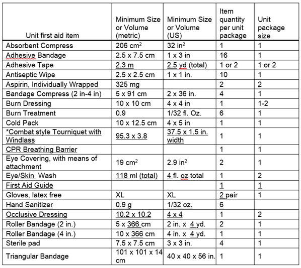

03.B First Aid Kits
03.B.01–03.B.04
03.B.01 The performance requirements of the first aid kits shall be based on the storage area location of the first aid kit and shall conform to ANSI/ISEA Z308.1. Content of all first aid kits shall be to the level of training attained by the responders using the first aid kit.
- Type I kits are intended for use in stationary, indoor settings where the potential for damage of kit supplies due to environmental factors and rough handling is minimal. Type I first aid kits are required to contain the minimum fill in Table 3-1.
- Type II, Type III, and Type IV first aid kits shall, at a minimum, meet the requirements of the minimum fill in Table 3-1:
- Type II kits are for portable indoor settings where the potential for damage of kit supplies due to environmental factors and rough handling is minimal;
- Type III kits are for portable use in mobile, indoor and/or outdoor settings where the potential for damage of kit supplies due to environmental factors is not probable (includes general indoor, sheltered outdoor use).
- Type IV kits are intended for portable use in mobile industries (i.e., utilities, construction, transportation, armed forces) and/or outdoor settings where the potential for damage of kit supplies due to environmental factors and rough handling is significant.
- The contents of the first aid kit shall, at a minimum, contain the items detailed in Table 3-1.
- First aid kits shall be easily accessible to all workers and protected from the weather. The individual contents of the first aid kits shall be kept sterile. First aid kit locations shall be clearly marked and distributed throughout the site(s).
03.B.02 The contents of first aid kits shall be checked by the employer prior to their use on site and at least every 3 months when work is in progress to ensure that they are complete, in good condition, and have not expired.
03.B.03 All employees who work where there is a first aid kit shall receive a tool box training on the content and use of the kit supplies.
03.B.04 Automatic External Defibrillator (AED). The placement of AEDs is optional (except for
health clinics, see 03.C.03.d) but highly recommended. The placement of AEDs on the worksite shall be preceded by an assessment of the time and distance to emergency medical services (EMS) and a justification for such equipment.
For the ease of use and program maintenance, all AEDs in a location and/or Command should be the same manufacturer and model. For guidance, USACE facilities should refer to Guidelines for Public Access Defibrillation Programs in Federal Facilities.
An AED program shall include, at minimum:
- Training and Retraining: Workers required to use an AED shall be trained per Section 03.A.02.c. All classes shall contain a hands-on component and cannot be taken online. Training shall be on the same model and manufacturer of AED available in the work area. The certificate(s) shall state the date of issue and length of validity;
TABLE 3-1
Requirements for Basic First Aid Unit Package

* Required when power tools in use.
- Licensed Physician direction and oversight;
- Documented weekly battery and functionality checks;
- Standard Operating Procedures (SOPs) for placement, maintenance, inspections, and EMS activation;
- Equipment Maintenance Program based on the manufacturer's recommendations that, at a minimum, shall include pad replacement (regular and after use) and battery replacement.
{kind=link}